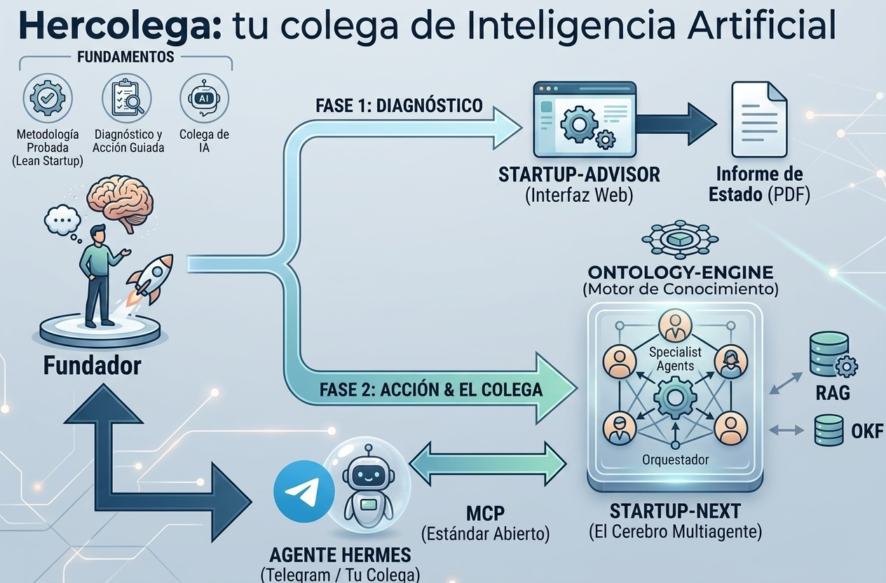

El emprendimiento y la IA
resultados de un experimento
Hercolega trata de falsear o validar si la IA cambia dos áreas clave del emprendimiento: el desarrollo de software y la gestión del conocimiento.
Resultado técnico
el desarrollo de software ha cambiado — validado
Resultado funcional
la gestión del conocimiento ha cambiado — en validación
La intención y los elementos
Nuestra intención
La intención última del proyecto Hercolega es facilitar el proceso de emprendimiento a cualquier fundador o equipo de fundadores. El objetivo es aumentar sus probabilidades de éxito y asegurar que su esfuerzo se utilice de la forma más productiva posible.
Para lograrlo, el sistema se apoya en tres fundamentos:
Los elementos del ecosistema
Para materializar esta visión, Hercolega se compone de piezas especializadas que trabajan en conjunto:
Diagrama simplificado
En el diagrama siguiente aparecen los elementos descritos y cómo se coordinan:

La IA no es una herramienta más. Es un cambio de terreno.
La IA no se añade sin más a lo que ya sabías. Es un cambio de contexto que acelera la caducidad del conocimiento. Procedimientos que funcionaban hace un año empiezan a quedar obsoletos. Formas de organizarse, de vender, de construir producto, que eran buenas prácticas, hoy se reescriben.
Emprender siempre fue avanzar sobre terreno incierto. Ahora, además, el terreno se mueve mientras caminas.
No todo caduca. La clave es saber qué resiste y qué se está formando.
Bajo el ruido del cambio hay conocimiento que no caduca: los fundamentos de cómo se descubre a un cliente, cómo se diseña un experimento, qué hace defendible a una empresa. Es el suelo firme.
Conocimiento validado
Asentado por décadas de práctica. Resiste el cambio. Es la roca sobre la que se pisa con confianza.
Conocimiento emergente
Real y valioso, pero todavía en formación. Cómo se emprende en un mundo de IA. Tentativo, cambiante, aún sin asentar.
El error más caro es tratarlos igual: apoyarte en lo emergente como si fuera firme, o descartar lo firme por parecer viejo. Emprender bien hoy es, sobre todo, saber sobre qué pisas.
No debería darte todo con la misma confianza. Debería ayudarte a saber de qué fiarte.
Una IA generalista te responde cualquier cosa con el mismo tono seguro. Lo validado y lo tentativo suenan igual de convincentes — y ahí está el peligro, porque no puedes distinguir el consejo probado del que alguien improvisó el mes pasado.
La IA bien usada hace lo contrario: te marca lo que sabe de lo que no. Te dice esto está validado, apóyate con confianza y esto es emergente, tómalo como hipótesis y valídalo con tu experiencia. No te da certezas falsas; te da un mapa honesto del conocimiento, con sus zonas firmes y sus zonas en construcción.
En un mundo donde el conocimiento caduca rápido, esa honestidad no es un lujo. Es la única forma de no construir sobre arena.
No un oráculo que decide por ti. Un colega que te da visión donde tu vista no llega.
Hay dos formas de apoyarse en la IA. Una es convertirla en oráculo: "dime qué hago" — y acabas dependiente, ejecutando decisiones que no entiendes del todo. La otra es tratarla como un colega: alguien que ve lo que tú no alcanzas desde donde estás, y te lo muestra, para que decidas tú.
Un buen colega no juzga en tu lugar. Amplía tu campo de visión — te trae el conocimiento que resiste, te señala lo que emerge, recuerda el camino que ya has recorrido — y con todo eso sobre la mesa, la decisión sigue siendo tuya. Mejor informada, más lúcida, pero tuya.
Un colega que conoce tu historia y te ayuda a mejorarla.
Esa es, en una frase, la clase de colega que perseguimos. No un experto que te conoce por primera vez cada vez que preguntas, sino uno que recuerda tu camino — qué intentaste, qué funcionó, qué falló, dónde estás — y que, con esa historia presente, te ayuda a escribir los siguientes capítulos mejor. La historia es tuya; el colega te acompaña a mejorarla.
Y ese colega no se queda quieto, en dos sentidos:
Crece contigo hacia nuevas fronteras. Hoy es experto en construir tu empresa. Pero el conocimiento que importa no deja de aparecer: mañana esa frontera puede ser cómo operar sobre los sistemas operativos de inteligencia artificial, o cómo innovar cuando las reglas se reescriben cada temporada — ejemplos de lo que muy probablemente emerja pronto. El colega evoluciona hacia esos dominios a medida que surgen, persiguiendo la frontera del conocimiento en vez de anclarse a lo de ayer.
No está solo: es parte de un equipo. Igual que un fundador se rodea de asesores —uno de ventas, uno de operaciones, uno legal—, tu agente personal orquesta a un equipo de colegas especialistas. El de emprendimiento es uno de ellos; tu agente es quien sabe a cuál acudir para cada cosa. El colega de hoy es la primera pieza de ese equipo.
Un colega que conoce tu historia, crece con ella hacia lo que viene, y se apoya en un equipo de especialistas — todo orquestado por tu agente de confianza, y con la decisión siempre en tus manos.
Esto es lo que hemos construido para que ese colega exista de verdad.
Hasta aquí, una convicción sobre cómo emprender hoy. Lo que sigue es cómo la hacemos real.
Hemos construido un conocimiento especializado en emprendimiento — no un chatbot genérico, sino un sistema que distingue explícitamente lo validado de lo emergente, que cita sus fuentes, y que se organiza en especialistas para cada fase y desafío de una startup: desde la ideación y el encaje producto-mercado hasta el escalado, las plataformas, las operaciones y la gobernanza.
Y ese conocimiento no vive aislado: se conecta a tu propio asistente de IA personal — el que tú elijas, en tu entorno, bajo tu control — para que te acompañe con método y con memoria de tu startup. El conocimiento experto, en el colega que ya usas.
Tres pasos, a tu ritmo.
Nota honesta: hoy hay un colega construido y funcionando —el de emprendimiento—. El equipo de colegas y su evolución hacia nuevos dominios son la dirección hacia la que crece el proyecto, no una promesa ya cumplida.
El emprendimiento y la IA
resultados de un experimento
La hipótesis
La IA afecta a todos los sistemas políticos, sociales, técnicos y económicos actuales. También al emprendimiento. La hipótesis del experimento, denominado Hercolega, trata de falsear o validar si la IA afecta a dos áreas clave del emprendimiento:
- el desarrollo de software (cómo se construye) y
- la gestión del conocimiento (cómo se accede al saber y se aplica en la decisión).
La afirmación se sostiene a nivel de caso, no de generalización: no se pretende demostrar que "todo el sector ha cambiado" (haría falta el estudio de muchos casos), sino que —como caso demostrable— el emprendimiento asistido por IA es cualitativamente distinto, y describir en qué consiste esa diferencia.
A lo largo de todo el experimento se distingue el resultado comprobado (lo que ya se demuestra) del resultado esperado (lo que el experimento predice y validará con uso real y tiempo).
El experimento y su instrumento
Hercolega es un sistema multiagente de IA: un servicio de conocimiento para el emprendimiento (siete especialistas sobre conocimiento validado y emergente), consultable por la web y por un agente personal externo (Agente Hermes de NousResearch) a través de un estándar abierto (MCP), construido por una persona con agentes de codificación de IA (Claude Code).
El experimento incorpora su propio instrumento de medición honesta: una capa de observabilidad y un juez automático (un modelo independiente que evalúa la calidad de las respuestas del sistema con una rúbrica).
Resultado técnico — el desarrollo de software ha cambiado
Validado por resultado tangible: el sistema existe, y su propia construcción es la prueba.
El emprendimiento, como todo sistema complejo, tiene fuerzas estructurales —gravedades— que tiran del fundador y que hay que administrar. Por ejemplo, Eric Ries nombró la gravedad financiera: la que empuja a ceder control a cambio de capital. La tesis de este resultado es que la IA no elimina las gravedades: cambia el mapa de las "gravedades" que el fundador debe enfrentar.
- Gravedad financiera — permanece. Se vigila igual que siempre.
- Gravedad técnica — la IA permite vencerla. Antes, convertir una idea en software obligaba a depender de intermediarios decisores (equipo, proveedor, capital para pagarlos) que podían decir "no". Hoy el fundador puede construir sin ceder a ese permiso. Es el paso de una libertad vigilada a una libertad con responsabilidad.
- Gravedad de la delegación — la nueva, que aparece al vencer la técnica: la deuda técnica se puede convertir en deuda cognitiva, si la gravedad de la delegación termina consiguiendo que la responsabilidad del fundador sea imposible.
Vencer una gravedad no es quedar libre de gravedad: es enfrentar otra. Y aquí el experimento se demuestra a sí mismo. Todo el rigor con que Hercolega fue construido —verificar las afirmaciones contra el código real en vez de fiarse de lo que la IA da por cierto, un juez que evalúa a la IA generadora, la honestidad epistémica, los inventarios de deuda— resulta ser exactamente la disciplina de delegar la ejecución sin delegar el criterio. Esa es la respuesta a la gravedad de la delegación. Por tanto, hay que verificar que la deuda cognitiva es nuestra siguiente "batalla", y cómo se puede afrontar sin perder los beneficios del desarrollo y la implantación asistidos por IA.
El resultado, ni soberbio ni ingenuo: una persona con criterio puede hoy dirigir la construcción de sistemas antes reservados a equipos, con un rigor antes difícil de sostener. No prueba que nadie necesite ya a nadie —se necesita a muchos: al asesor, a la organización, a la propia IA—. Prueba que una dependencia que podría implicar rendición (el intermediario decisor sin el cual no existías) ahora puede ser opcional. La necesidad legítima es colaboración. La deuda técnica anterior requiere para su pago conocimiento y capital. La potencial deuda cognitiva actual requiere inteligencia y juicio personal. No implica cesión ni arrendamiento, solo ser consciente y capaz.
Resultado funcional — la gestión del conocimiento ha cambiado
Resultado en dos tiempos: la capacidad está construida (hoy); su efecto se valida con uso real (pendiente).
El conocimiento del emprendimiento existe —en libros, cursos, mentores— pero no está siempre disponible en el momento de la decisión, y cuando está no está filtrado para esa decisión. Ese es el dolor que la IA cambia. El emprendedor es una fábrica de decisiones en el tiempo. Toda decisión tiene dos partes: un pronóstico (datos, método, experiencia: objetivable) y un juicio (personal, de intención: humano). La IA soporta (conocimiento, datos) en el pronóstico y asesora en el juicio (estrategia, opciones, escenarios).
El valor de Hercolega para los principales actores del emprendimiento puede verse así:
| Pieza | Papel | Qué aporta Hercolega |
|---|---|---|
| Emprendedor | Dar forma a la energía | luz en el pronóstico (hoy); apoyo al juicio (esperado) |
| Asesor | El catalizador | lo libera de lo repetible; incorpora su juicio situado (experiencia) |
| startup-next | El conocimiento just-in-time | entrega just-in-time, fiel, epistémicamente honesta |
| Organización (ONG, aceleradora, otras) | El crisol | hace rendir sus incentivos materiales; recicla su experiencia, junta los elementos en su justa medida para que emerja la alquimia |
- Comprobado hoy: en el pronóstico, el sistema entrega conocimiento validado en el momento preciso, con fidelidad verificable y honestidad epistémica (distingue lo validado de lo emergente). El valor no es el conocimiento en sí —ya existe— sino su entrega contextualizada justo cuando se decide.
- Esperado: en el juicio, una síntesis de experiencias equiparables con su probabilidad (un conocimiento experiencial-reputacional, tercera categoría epistémica), que apoye sin sustituir. Extensión coherente del mecanismo, aún por construir. Y, sobre todo, el efecto de todo ello en actores reales —mejores decisiones, asesores que escalan, organizaciones cuyos incentivos rinden más—, que el instrumento (observabilidad + juez) permitirá validar de forma constante.
Esta ha sido la síntesis que describe el experimento Hercolega: el emprendimiento y la IA, junto con sus resultados actuales.
¿Quieres ver cómo está construido de verdad?
Todo lo anterior es la promesa. Si te interesa el cómo — la arquitectura, las decisiones de ingeniería, qué está probado y qué es horizonte —, lo hemos documentado con detalle.
El proyecto →